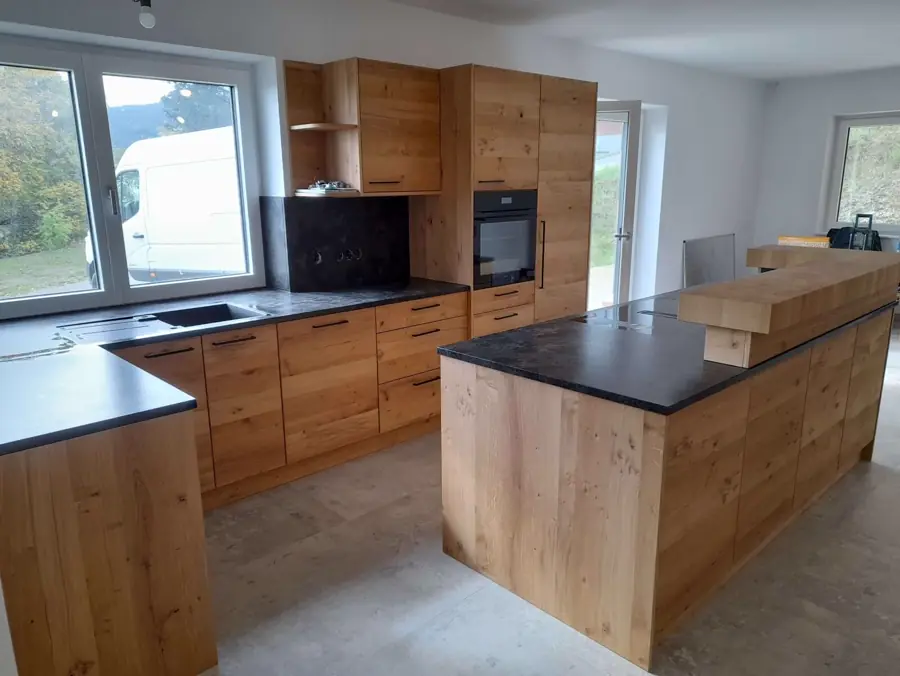

Tischlerei Ochenbauer in Schaueregg Ihr Tischler im Wechselland.
Unsere Werkstatt liegt am Fuß des Wechsels, dort wo Steiermark, Niederösterreich und das Burgenland nah beieinander liegen. Von hier fertigen wir Küchen, Möbel und Holzstiegen nach Maß für die Region und auf Wunsch für ganz Österreich.

Drei Bundesländer, kurze Wege
Schaueregg gehört zur steirischen Gemeinde Pinggau. Mönichkirchen in Niederösterreich liegt knapp 3 Straßenkilometer entfernt, Pinkafeld im Burgenland rund 18. Nach Pinggau, Friedberg, Schäffern oder Aspang braucht man mit dem Auto keine Viertelstunde.
Sie sprechen bei uns direkt mit dem Tischler: Gottfried Ochenbauer plant mit Ihnen, fertigt in der eigenen Werkstatt und montiert bei Ihnen zu Hause. Seit 2014 führt er die Tischlerei, mit Holz arbeitet er seit mehr als 20 Jahren.
Das machen wir für Sie
- Küchen nach Maß
- Möbel nach Maß
- Holzstiegen
- Möbelmontage, Reparatur und Restaurierung
- Holzhandel
Wie weit ist es zu Ihnen?
Straßenkilometer und ungefähre Fahrzeit von unserer Werkstatt in Schaueregg 23 bis zur Ortsmitte.
| Ort | Strecke | Fahrzeit |
|---|---|---|
| Pinggau | 7 km | ca. 8 Min. |
| Friedberg | 8 km | ca. 9 Min. |
| Schäffern | 11 km | ca. 10 Min. |
| Dechantskirchen | 15 km | ca. 12 Min. |
| Rohrbach an der Lafnitz | 19 km | ca. 17 Min. |
| St. Lorenzen am Wechsel | 23 km | ca. 25 Min. |
| Ort | Strecke | Fahrzeit |
|---|---|---|
| Mönichkirchen | 3 km | ca. 4 Min. |
| Aspang-Markt | 12 km | ca. 12 Min. |
| Feistritz am Wechsel | 20 km | ca. 20 Min. |
| Kirchberg am Wechsel | 25 km | ca. 24 Min. |
| Ort | Strecke | Fahrzeit |
|---|---|---|
| Pinkafeld | 18 km | ca. 18 Min. |
| Grafenschachen | 19 km | ca. 17 Min. |
Berechnet mit OpenStreetMap, gerundet. Ihr Ort ist nicht dabei? Wir arbeiten grundsätzlich in ganz Österreich. Rufen Sie an unter 0664 73617208 und wir besprechen Ihr Projekt.
Arbeiten aus unserer Werkstatt
Einblicke in ausgewählte Projekte — wählen Sie eine Kategorie für die vollständige Galerie.
Wie wir arbeiten
Vom ersten Gespräch bis zur fertigen Lieferung — einfach, ehrlich, handwerklich.
-
Gespräch
Sie schildern Ihre Idee. Wir hören zu — ohne Fachsprache, ohne Druck.
-
Entwurf
Gemeinsam planen wir Maße, Holzart und Oberfläche bis ins Detail.
-
Ausführung
Handwerkliche Umsetzung mit Sorgfalt — bis Sie wirklich zufrieden sind.
Projekt besprechen?
Erzählen Sie uns von Ihrer Idee – wir beraten Sie persönlich, kostenlos und unverbindlich.